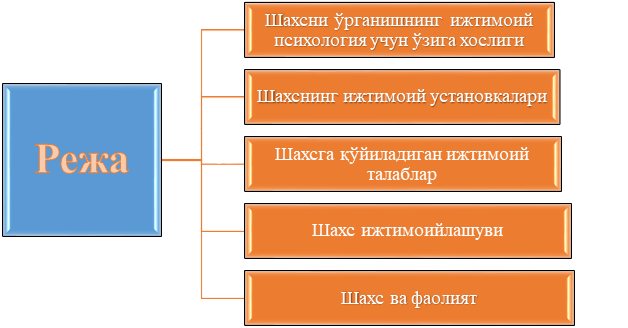
1-Режа. Шахсни ўрганишнинг ижтимоий психология учун ўзига хослиги
Мулоқот жараёнининг ҳам, гуруҳий жараёнларнинг ҳамда эгаси— субъекти ҳамда объекти аслида алоҳида шахс, конкрет одамдир. Шунинг учун ҳам ижтимоий психология алоҳида шахс муаммосини ҳам ўрганадики, уни ўша турли ижтимоий жараёнларнинг иштирокчиси ва фаол амалга оширувчиси деган нуқтаи назардан текширади.
Маълумки, шахс муаммоси умумий психологияда ҳам, ёш психологияси ва педагогик психологияда ҳам, дифференциал, ҳуқуқий психология ва психологиянинг қатор махсус бўлимларида ҳам ўрганилади. Ҳар бир бўлим ёки тармоқ уни ўз мавзуи ва вазифалари нуқтаи назаридан шахсга тааллуқли бўлган муаммоларни ёритади. Масалан, умумий психология шахсни психологик фаолиятнинг маҳсули, алоҳида психик жараёнларнинг эгаси деб ҳисобласа, социология уни ижтимоий муносабатларнинг объекти деб қарайди.
Шахс муаммосига ижтимоий-психологик ёндашишнинг ўзига хослиги шундаки, у турли гуруҳлар билан бўладиган турли шаклдаги ўзаро муносабатларнинг оқибати сифатида қаралади. Яъни, ижтимоий психология аввало бирор гуруҳнинг аъзоси ҳисобланган шахс хулқатвори қандай қонуниятларга бўйсунишини, шахснинг мулоқотлар системасида олган таъсирлари унинг онгида қандай акс топишини ўрганади.
Гуруҳнинг шахс психологиясига таъсири қай йўсинда содир бўлиши ижтимоий психологияда социализация, яъни ижтимоийлашув муаммоси билан узвий боғлиқ бўлса, бу таъсирларнинг шахс ҳаттиҳаракатлари, хулқида бевосита қандай намоён бўлиши ижтимоий йўл-йўриқлар муаммоси билан боғлиқдир.
Ана шулар асосида шахсда шаклланадиган фазилатлар ва уларнинг турли типдаги шахсларда намоён бўлишини аниқлаган ҳолда, шахс хулқ-атворини бошқариш механизмларини ишлаб чиқиш ижтимоий психологиянинг асосий вазифаларидан биридир.
2-Режа. Шахснинг ижтимоий установкалари
Соф психологик маънода янгича тафаккур ва дунёқарашни шакллантирувчи ва ўзгартирувчи ижтимоий психологик механизм - бу ижтимоий установкалардир. Бу - шахснинг атроф муҳитида содир бўлаётган ижтимоий ҳодисаларни, объектларни, ижтимоий гуруҳларни маълум тарзда идрок этиш, қабул қилиш ва улар билан муносабатлар ўрнатишга руҳий ички ҳозирлик сифатида одамдаги дунёқарашни ҳам ўзгартиришга алоқадор категориядир. Ижтимоий муҳитнинг таъсири хулқ-атворда бевосита намоён бўлади. У ёки бу хулқ-атворнинг сабаби унинг мотивидир. Ижтимоий психология шахс хулқ-атворининг мотивлари сифатида ижтимоий установкаларни ўрганади.
Рус олими В.А. Ядов ўзининг диспозицион концепциясини яратиб, унда установкаларни тўрт босқич ва тўрт тизимли сифатида тасаввур қилган.
А) элементар установкалар (set) - оддий, элементар эҳтиёжлар асосида кўпинча онгсиз тарзда ҳосил бўладиган установкалар. Уларни ўзгартириш учун моддий шарт - шароитларни ва одамдаги эҳтиёжлар тизимини ўзгартириш кифоя.
Б) ижтимоий устновкалар (attitud) - ижтимоий вазиятлар таъсирида ижтимоий объектларга нисбатан шаклланадиган установкалар. Уларни ўзгартириш учун ижтимоий шарт - шароитлар ва шахснинг уларга нисбатан баҳо ва муносабатлари тизимини ўзгартириш керак.
В) базавий ижтимоий установкалар - улар шахснинг умумий йўналишини белгилайди ва уларни ўзгартириш эътиқодлар ва дунёқарашларни ўзгартириш демакдир.
Г) қадриятлар тизими - улар авлодлараро мулоқот жараёнининг маҳсули сифатида жамиятда қадр - қиммат топган нарсаларга нисбатан установка. Масалан, саҳиҳ ҳадислар шундай қадриятлардир, биз уларни танқидсиз, муҳокамаларсиз қабул қиламиз, чунки улар ҳам илоҳий, ҳам энг буюк инсонлар томондан яратилган ва авлоддан авлодга ўз қадрини йўқотмай келаётган қадриятлардир.
Ижтимоий установка шахс хулқ-атворининг ички, англанмаган ёки қисман англанган мотивларига киради. Масалан, бир кишига бадиий адабиётдан айнан бир гуруҳ асарлар ёқади. Лекин нима учун худди шу асарлар гуруҳи ёки шу адиб ёқишини тушунмайди. Ўша гуруҳдан янги бир китоб қўлга кирганда у албатта ёқиши керак деган тасаввурда бўлади. Шу маънода олиб қаралганда, ижтимоий установка шахсдаги англанмаган муносабатларга ўхшайди. Лекин аслида унинг табиати жуда мураккабдир. Чунки ижтимоий установка тушунчасида муносабатлар ҳам, шахсий маъно ҳам, баҳолар системаси ҳам, билимлар ҳам ўз ифодасини топади. Яъни, ижтимоий установка шахснинг турли ижтимоий объектларга нисбатан муносабат билдиришининг ички механизмидир, шу объектлар билан ишлашга, уларни баҳолашга ҳамда маълум тарзда идрок қилишга тайёргарлик ҳолатидир.
Ижтимоий установка муаммоси Ғарбда, айниқса, Америка Қўшма Штатларида ҳар тарафлама чуқур ўрганилган муаммолардан ҳисобланади. Америкалик олимлар унинг шахснинг аввалги хаётий тажрибасига, ундаги ижтимоий тасаввурларга боғлиқлигини ўрганиб, шахс хулқ-атворини турли шароитларда бошқарувчи механизм эканлигини исбот қилдилар. Улар ижтимоий установкани бир сўз билан - ''аттитюд" сўзи билан ифодалайдилар. 1942-йилдаёк М. Смит аттитюднинг уч компонентли структурасини ишлаб чиққан. Бунга кўра аттитюдда уч қисм бўлиб, булар когнитив қисм, аффектив қисм ҳамда конатив қисмларидир.
Когнитив қисм - бу шахсдаги аттитюд объектига нисбатан билимлар, унинг одам томонидан англанишидир. Бунга шахсдаги билимлардан ташкари ғоялар, тасаввурлар, принциплар ва ҳоказолар киради.
Атттюднинг аффектив қисми - бу ўша объектни ҳиссий-эмоционал баҳолаш бўлиб, ёқтириш ёки ёқтирмаслик тарзидаги ҳиссиётлар киради.
Конатив қисм ёки хулқ-атвор билан боғлиқ қисмга эса шу объектга нисбатан амалга ошириладиган ҳатти-ҳаракатлар, айнан хулқатвор киради.
Лекин баъзи олимларда установканинг айнан объектга ёки вазиятга нисбатан бўлиши мумкинлига ҳақида маълумотлар ҳам бор эди. Хусусан, Лапьернинг 1934-йилда ўтказган машҳур эксперименти бунга мисол бўлиши мумкин. Экспериментнинг мазмуни куйидагича эди. Лапьер иккита хитойлик талабалар билан АҚШ буйлаб саёҳатга чиқади. Улар ҳаммаси бўлиб 252 та мехмонхонада бўлишиб, уларнинг деярли барчасида (биттасидан ташқари) илиқ, самимий муносабатнннг гувоҳи бўлишади.
Маълумки, ўша пайтларда ирқий белги бўйича одамларга танлаб муносабатда бўлишар, хитойликлар ҳам сариқ танлилар сифатида камситиларди. Лапьер билан ҳамроҳ бўлган талабаларга муносабат билан олимга бўлган муносабат ўртасида деярли фарқ сезилмади. Саёҳат тугагач, Лапьер ўша барча меҳмонхона эгаларига миннатдорчилик хати ёзиб, яна ўша талабалар билан борса, яна ўшандай илиқ кутиб олишлари мумкинлигини сўради. Жавоб фақат 128 та мехмонхона эгаларидан келди, уларнинг ҳам биттасида ижобий жавоб, 58% да рад жавоби, қолганларида турлича формаларда ноаниқ жавоблар олинди. Бундан Лапьер шундай хулосага келди: демак хитой миллатига мансуб шахсларга нисбатан ижтимоий установка билан меҳмонхона эгаларининг реал хулқ-атворлари ўртасида фарқ бўлиб, аслида установка салбий эканлиги, вазиятга қараб эса, у бошқача - ижобий намоён бўлганлиги аниқланди.
Ижтимоий установкаларга хос бўлган умумий қонуниятлардан яна бири унинг узоқ муддатли хотира билан боғлиқлигидир. Айни вазиятларда шаклланган образлар узоқ муддатли хотирада сақланиб, у ёки бу вазиятда актуаллашади, яъни ''жонланади". Масалан, баъзи бир этник стереотиплар ана шундай хотира образларидандир. Демак, ижтимоий установка объектга ҳамда конкрет вазиятга боғлиқдир.
Шаклланган ижтимоий установканинг ҳаёт мобайнида ўзгариши мумкинлиги муҳим ижтимоий-психологик аҳамиятга эгадир. Америкалик олим Ховланд фикрича, ижтимоий установка ўргатиш йўли билан ўзгариши мумкин. Яъни ўқувчилардаги турли установкаларни ўзгартириш учун рағбатлантириш ёки жазолаш тизимини ўзгартириш лозимдир. Икки шахс ёки шахс билан гуруҳнинг установкалари мос келмай қолган шароитда эса томонлардан бири онгли равишда ўз установкаларини ўзгартириши шартдир. Акс ҳолда номутаносиблик принципига кўра шахслараро низо ёки келишмовчилик пайдо бўлиши муқаррардир.
Ижтимоий устновкаларни ўзгартиришнинг энг содда ва қулай йўли - бу айни вазиятлар ва улардаги таъсирларни қайтаришдир. Бу қайтариш қайд қилинган образ сифатида инсон онгида узоқ муддатли хотирада сақланади ва вазият пайдо бўлганда, объективлашади, яъни ўз кучини ва мавжудлигини кўрсатади. Шунинг учун ҳам агар чет эл тажрибасига мурожаат қиладиган бўлсак, у ерда бирор ғояни онгга сингдириш учун бир одам ёки бирор гуруҳ ўз сиёсий, мафкуравий ёки бошқа қарашларини бир хил сўзлар ва иборалар, ҳаракатлар билан қайтараверади ва шу йўл билан кўп чиликнинг маъқуллашига эришади. Айниқса, сайлов олди тадбирларида ана шу усул кенг қўлланилади. Шулардан келиб чиқиб, ижтимоий установкаларни ўзгартиришнинг усуллари ва психологик воситалари орқали ҳам дунёқарашни ўзгартиришга эришиш мумкин.
Хулоса қилиб айтганда, шахсга социал-психологик ёндашиш уни маълум гуруҳларнинг аъзоси, конкрет шароитида ўзига ўхшаш шахслар билан мулоқотга киришувчи конкрет одам деб тушунишдир.
3-Режа. Шахсга қўйиладиган ижтимоий талаблар
Ижтимоий нормалар, санкциялар, роллар ижтимоий механизмлар сифатида шахс хулқ - атворини маълум маънода бошқариб, мувофиқлаштириб туришга ёрдам беради. Лекин инсоннинг комиллиги, унинг аҳлоқ - ижтимоий нормалар доирасидаги мақбул ҳаракати унинг ўзига ҳам боғлиқдир. Одамнинг ўз - ўзини англаши, билиши ва ўз устида ишлаши аввало унинг диққати, онги бевосита ўзига, ўз ички имкониятлари, қобилиятлари, ҳиссий кечинмаларига қаратилишини тақозо этади. Яъни, ижтимоий хулқ - шахс томонидан уни ўраб турган одамлар, уларнинг хулқ - атворларига эътибор беришдан ташқари, ўзининг шахсий ҳаракатлари ва уларнинг оқибатларини мунтазам тарзда таҳлил қилиб бориш орқали, ролларни мувофиқлаштиришни ҳам тақозо этади.
Ижтимоий нормалар
Ижтимоий норма - шахс ҳаётида шундай категорияки, у жамиятнинг ўз аъзолари хулқ - атворига нисбатан ишлаб чиққан ва кўпчилик томонидан эътироф этилган ҳаракатлар талабларидир. Масалан, ўзбеклар учун бирор хонага кириб келган инсоннинг ким бўлишидан қатъий назар, «Ассалому алайкум» деб келиши - норма; ўқувчининг ўқитувчи берган топшириқларни бажариши лозимлиги - норма; хотиннинг эр ҳурматини ўрнига қўйиши, қайнонага гап қайтармаслик - норма; автобусда ёки бошқа жамоат транспортида кичикнинг катталарга, ногиронларга ўрин бўшатиши - норма ва ҳакозо. Бу нормаларни айрим - алоҳида одам ишлаб чиқмайди, улар бир кун ёки бир вазиятда ҳам ишлаб чиқилмайди. Уларнинг пайдо бўлиши ижтимоий тажриба, ҳаётий вазиятларда кўп чилик томонидан эътироф этилганлиги факти билан ҳарактерланади, ҳар бир жамият, давр, миллат ва ижтимоий гуруҳ психологияда муҳрланади.
Ижтимоий санкция
Ижтимоий нормаларнинг у ёки бу даврда, у ёки бу тоифа вакили бўлмиш шахс томонидан қай даражада бажарилиши ёки унга амал қилинаётганлиги ижтимоий санкциялар орқали назорат қилинади. Ижтимоий санкциялар - нормаларнинг шахс хулқида намоён бўлишини назорат қилувчи жазо ва рақобатлантириш механизмлари бўлиб, уларнинг борлиги туфайли биз ҳар бир алоҳида вазиятларда ижтимоий хулқ нормаларини бузмасликка, жамоатчиликнинг салбий фикри объектига айланиб қолмасликка ҳаракат қиламиз. Масалан, юқоридаги мисолда, агар жамоат транспортида катта муйсафид кишига ўрин бўшатишни норма деб қабул қилмаган ўсмирга нисбатан кўп чиликнинг айблов кўзи билан қараши, ёки оғзаки танбеҳ бериши, жуда кам ҳолларда ўзини бебош тутаётган ўсмирнинг қўлидан тутиб, нима қилиш кераклигини ўргатиб, «кўзини мошдай қилиб очиб қўйиш» ижтимоий санкциянинг ҳаётдаги бир кўринишидир.
Ижтимоий рол
Ҳар бир алоҳида шахс жамият томонидан ишлаб чиқилган ва қабул қилинган ижтимоий нормалар ва санкцияларни у ёки бу ижтимоий ролларни бажариши мобайнида хулқида намоён этади. Рол - шахсга нисбатан шундай тушунчаки, унинг конкрет ҳаётий вазиятлардаги хуқуқ ва бурчларидан иборат ҳаракатлари мажмуини билдиради. Масалан, талаба ролини оладиган бўлсак, уни бажариш - у ёки бу олий ўқув юртида тахсил олиш, унинг моддий базасидан фойдаланиш, кутубхонасига аъзо бўлиш, стипендия олиб, маъмуриятнинг ижтимоий ҳимоясида бўлиш каби қатор ҳуқуқлар билан биргаликда ўша олийгоҳ ички тартиб - интизоми нормаларига сўзсиз бўйсуниш, дарсларга ўз вақтида келиш, рейтинг баҳолов талаблари доирасида кундалик ўзлаштириш нормаларини бажариш, амалиётда бўлиш, деканатнинг берган жамоатчилик топшириқларини ҳам бажариш каби қатор бурчларни ҳам ўз ичига олади.
Бу рол унинг уйга боргач бажарадиган «фарзандлик» роли (ота ва она, яқин қариндошлар олдида) талаб ва имтиёзларидан фарқ қилади. Яъни, конкрет шахснинг ўзига хослиги ва қайтарилмаслиги у бажарадиган турли - туман ижтимоий ролларнинг ҳарактеридан келиб чиқади. Шунга кўра, кимдир «тартибли, баъмани, фозил, аҳлоқли ва одобли» дейилса, кимдир - беъмани, бебош, ўзгарувчан, иккиюзламачи (яъни, бир шароитда жуда қобил, бошқа ерда - бетартиб) деган ҳаётий мавқега эга бўлиб қолади.
Ҳаётда шахс бажарадиган ижтимоий роллар кўп лиги сабабли ҳам, турли вазиятлардаги унинг мавқеи - статуси ҳам турлича бўлиб қолади. Агар бирор рол шахс ижтимоий тасаввурлари тизимида унинг ўзи учун ўта аҳамиятли бўлса (масалан, талаба роли), у бошқа ролларни унчалик қадрламаслиги ва оқибатда, ўша вазиятда бошқачароқ, ноқулай ва нобопроқ мавқени эгаллаб қолиши мумкин. қолаверса, ролларнинг кўплиги баъзан роллар зиддиятини ҳам келтириб чиқариши мумкинки, оқибатда - шахс ички руҳий қийинчиликларни ҳам бошдан кечириши мумкин.
Масалан, сиртдан таҳсил олаётган талаба сессия пайтида ишлаб турган корхонасига комиссия келиши ва унинг фаолиятини текшираётганлигини билиб, руҳий азобга тушади - бир томондан, талабачилик ва унинг талаблари, иккинчи томондан - касбдошлар олдида уялиб қолмаслик учун ҳар куни ишхонага ҳам бориб келиш.
4-Режа. Шахс ижтимоийлашуви
Ҳар биримизнинг жамиятдаги ўрнимиз, унинг қачон ва қандай шароитларда пайдо бўлгани, жамиятга қўшилиб яшашимизнинг психологик механизмлари фаннинг муҳим вазифаларидан биридир. Бу жараён психологияда ижтимоийлашув ёки социализация деб юритилади.
Демак, социализақия ёки ижтимоийлашув - инсон томонидан ижтимоий тажрибани эгаллаш ва ҳаёт - фаолият жараёнида уни фаол тарзда ўзлаштириш жараёнидир. Содда тил билан айтганда, ижтимоийлашув - ҳар бир шахснинг жамиятга қўшилиши, унинг нормалари, талаблари, кутишлари ва таъсирини қабул қилган ҳолда, ҳар бир ҳаракати ва муомаласида уни кўрсатиши ва керак бўлса, шу ижтимоий тажрибаси билан ўз навбатида ўзгаларга таъсирини ўтказа олиши жараёнидир.
Ижтимоийлашув энг аввало одамлар ўртасидаги мулоқот ва ҳамкорликда турли фаолиятни амалга ошириш жараёнини назарда тутади. Ташқаридан шахсга кўрсатилаётган таъсир оддий, механик тарзда ўзлаштирилмай, у ҳар бир шахснинг ички руҳияти, дунёни акс эттириш хусусиятлари нуқтаи назаридан турлича субъектив тарзда идрок этилади. Шунинг учун ҳам бир хил ижтимоий муҳит ва бир хил таъсирлар одамлартомонидан турлича ҳаракатларни келтириб чиқаради. Масалан, 10 - 15 та ўқувчидан иборат академик лицей ўқувчиларини олайлик. Уларнинг билимни, илмни идрок қилишлари, улардан ота - оналарининг кутишлари, ўқитувчиларнинг бераётган дарслари ва унда етказилаётган маълумотлар, манбалар ва бошқа қатор омиллар бир хилдай. Лекин барибир ана шу 15 ўқувчининг ҳар бири шу таъсирларни ўзича, ўзига хос тарзда қабул қилади ва бу уларнинг ишдаги ютуқлари, ўқув кўрсатгичлари ва иқтидорида акс этади. Бу ўша биз юқорида таъкидлаган ижтимоийлашув ва индивидуализация жараёнларининг ўзаро боғлиқ ва ўзаро қарама - қарши жараёнлар эканлигидан дарак беради.
Ижтимоийлашув жараёнларининг рўй берадиган шарт - шароитларини ижтимоий институтлар деб атаймиз. Бундай институтларга оиладан бошлаб, маҳалла, расмий давлат муассасалари (боқча, мактаб, махсус таълим ўчоқлари, олийгоҳлар, меҳнат жамоалари) ҳамда норасмий уюшмалар, нодавлат ташкилотлари киради. Бу институтлар орасида бизнинг шароитимизда оила ва маҳалланинг роли ўзига хосдир. Инсондаги дастлабки ижтимоий тажриба ва ижтимоий хулқ элементлари айнан оилада, оилавий муносабатлар тизимида шаклланади. Шунинг учун ҳам халқимизда «қуш уясида кўрганини қилади» деган мақол бор. Яъни, шахс сифатларининг дастлабки қолиплари оилада олинади ва бу қолип жамиятдаги бошқа гуруҳлар таъсирида сайқал топиб, такомиллашиб боради.
Бизнинг ўзбекчилик шароитимизда оила билан бир қаторда маҳалла ҳам муҳим тарбияловчи - ижтимоийлаштирувчи роль ўйнайди. Шунинг учун бўлса керак, баъзан одамнинг қайси маҳалладан эканлигини суриштириб, кейин хулоса чиқаришади, яъни маҳалла билан маҳалланинг ҳам фарқи бўлиб, бу фарқ одамлар психологиясида ўз аксини топади. Масалан, битта маҳалладан яхши келин чиқса, айнан шу маҳалладан қиз қидириб қолишади. Яъни, шу маҳалладаги ижтимоий муҳит қизларнинг иболи, ақлли, сариштали бўлиб етишишларига кўмаклашган.
Масалан, айрим маҳаллаларда саҳар туриб кўча - эшикларни супуриш одатга айланган ва барча оилалар шу удумни бузмайдилар. Шунга ўхшаш нормалар тизими ҳар бир кўча-маҳалланинг бир-биридан фарқи, афзаллик ва камчилик томонларини белгилайди, охиргилар эса шу маҳаллага катта бўлаётган ёшлар ижтимоийлашувида бевосита таъсирини кўрсатади. Яна бир муҳим ижтимоийлашув ўчоқларига мактаб ва бошқа таълим масканлари киради. Айнан шу ерда ижтимоийлашув ва тарбия жараёнлари махсус тарзда уйқунлаштирилади.
Бизнинг ижтимоий тасаввурларимиз шундайки, мактабни биз таълим оладиган, бола билимлар тизимини ўзлаштирадиган маскан сифатида қабул қиламиз. Лекин аслида бу ер ижтимоийлашув тарбиявий воситаларда юз берадиган маскандир. Бу ерда биз атайлаб ташкил этилган, охирги йилларда жорий этилган «Тарбия дарслари», «Этика ва психология» каби тарбияловчи фанларни назарда тутмаяпмиз.
Гап ҳар бир дарснинг, умуман мактабдаги шарт-шароитлар, умумий муҳитнинг тарбияловчи роли ҳақида. Масалан, дарс пайтида ўқитувчи бутун диққати билан янги дарсни тушунтириш билан овора дейлик. Унинг назарида фақат дарс, мавзунинг мазмуни ва ундан кўзланган мақсад асосийдай. Лекин аслида ана шу жараёндаги ўқитувчининг ўзини қандай тутаётганлиги, кийим - боши, мавзуга субъектив муносабати ва қолаверса, бутун синфдаги ўқувчиларга муносабати ҳамма нарсани белгиловчи, ижтимоий тажриба учун муҳим аҳамиятга эга бўлган омилдир.
Шу нуқтаи назардан ўқувчилар диди, кутишлари ва талабларига жавоб берган ўқитувчи болалар томонидан тан олинади, акс ҳолда эса ўқитувчининг таъсири фақат салбий резонанс беради. Худди шундай ҳар бир синфда шаклланган муҳит ҳам катта роль ўйнайди. Баъзи синфларда ўзаро ҳамкорлик, ўртоқчилик муносабатлари яхши йўлга қўйилган, гуруҳда ижодий мунозаралар ва баҳслар учун қулай шароит бор. Бу муҳит табиий ўз аъзолари ижтимоий хулқини фақат ижобий томонга йўналтириб туради.
Яна бир муҳим ижтимоийлашув муҳити - бу меҳнат жамоаларидир. Бу муҳитнинг аҳамияти ва ўзига хослиги шундаки, бу ерга шахс одатда анча ақли пишиб қолган, маълум тажрибага эга бўлган, ҳаёт ҳақидаги тасаввурлари шаклланган пайтда келади. қолаверса, эгалланган мутахассислик, орттирилган меҳнат малакалари ва билимлар ҳам жуда муҳим бўлиб, шу муҳитдаги ижтимоий нормалар ҳарактерига таъсир қилади. Лекин барибир шахснинг кимлар билан, қандай ўзаро муносабатлар муҳити таъсирида эканлиги унинг етуклик давридаги ижтимоийлашувининг муҳим мезонларидандир.
Шунинг учун ишга киришдаги асосий мотивлардан бири - ўша жамоанинг қандай эканлиги, бу ердаги ўзаро муносабатлар, раҳбарнинг кимлиги ва унинг жамоага муносабати бўлиб, кўп инча ойлик - маош масаласи ана шулардан кейин ўрганилади. Шунинг учун меҳнат жамоаларида яхши, соғлом маънавий муҳит, адолат ва самимиятга асосланган муносабатлар ҳар бир инсон тақдирида катта роль ўйнайди.
Шахс социализацияси тўғрисида гап кетаркан, айтиш керакки, социализация соф ижтимоий-психологик тушунча бўлиб, у - индивиднинг ижтимоий муҳитга қўшилиши, ижтимоий таъсирларни ўзига сингдириши ва актив равишда мулоқот системасига кириб бориши жараёнидир. Бу жараён икки томонлама бўлиб, бир томондан, шахс актив равишда ижтимоий таъсирларни қабул қилади, иккинчи томондан эса, уларни ҳаётда ўз хулқ-атворлари, муносабатларида намоён этади.
Бу жараён нормал индивидда табиий тарзда рўй беради, чунки индивидда шахс бўлишга эҳтиёж ҳамда шахс бўлишига имконият ва зарурият бордир. Шунинг учун ҳам бола туғилиб, ижтимоий муҳитга қўшилган ондан бошлаб, ундаги шахс бўлишга интилишни, ундаги шаклланиш жараёнини кузатиш мумкин (масалан, чақалоқлардаги бевосита эмоционал мулоқотга эҳтиёжнинг борлиги). Шахс социализацияси ёки шаклланишининг ўз соҳаси, босқичлари ва муассасалари мавжуд.
Шахснинг шаклланиши асосан уч соҳада амалга оширилади:
1) фаалият соҳаси, яъни умри мобайнида шахс турли фаолиятларга бевосита ёки билвосита жалб этилган бўлиб, бу жараёнда фаолиятлар жабхаси, сохаси кенгайиб, бойиб бораверади. Ҳар бир фаолият тури индивиддан махсус фазилатларни, малака ва кўникмаларни, билимларни талаб этадики, уларни қониқтириш йўлидаги активлиги унда ўзига хос ижтимоии-психологик хусусиятлар комплексини шакллантиради;
2) мулоқот соҳаси, айниқса мактабгача ёш даврдаги ва ўсмирлик даврларидаги мулоқот системалари болада бир қанча ижтимоийпсихологик хислатларни пайдо қиладики, бунинг натижасида у фаол ҳаётий мавқега эга бўлади, жамиятда ўз ўрнини тасаввур қилишга эришади.
3) ўз-ўзини англаш соҳаси, яъни ''Мен" образининг йил сайин ўзгариб бориши жараёни бўлиб, аввал ўзини бошқалардан фарқлилигини, ўзича мустақил ҳаракат қилиш, мустақил фикр юрита олиш қобилиятини англаш, сўнгра эса ўз-ўзини баҳолаш, англаш, назорат қилиш- хусусиятлари ривожланадики, улар ҳам фаол шахс психологиясининг таркибий қисмидир.
Шахс ижтимоийлашувининг ушбу босқичлари мавжуд. Масалан, биринчи босқич-меҳнат фаолиятигача бўлган босқич бўлиб, унга боланинг мактабгача ёш даври ҳамда ўқиш йиллари киради. Бу даврдаги ижтимоийлашувнинг аҳамияти ва ўзига хослиги шундаки, бу даврда асосан ташқи ижтимоий муҳит, ижтимоий таъсирлар фаол равишда онгга сингдирилади, мустақил ҳаётга тайёргарлик борасида муҳим босқич ўтилади.
Иккинчи босқич - меҳнат фаолияти даври - бу давр одамнинг етуклик йиллари билан боғлиқ бўлиб, аввалги даврларда сингдирган ижтимоий таъсирларни бевосита фаол фаолиятда, шахслараро муносабатлар системасида намоён этади. Касбга эга бўлиб, аниқ ҳаёт йўлини танлаган, турмуш қуриб, келгуси авлодни тарбиялаётган шахсда намоён бўладиган барча ижтимоий фазилатлар шу даврнинг маҳсулидир.
Ниҳоят, учинчи босқич - меҳнат фаолиятидан кейинги давр бўлиб, бунга асосан актив меҳнат фаолиятидан сўнг қарилик гаштини сураётганлар киради. Бу даврда ҳам шахс ижтимоийлашуви давом этаверади, чунки энди илгариги даврларда орттирилган тажриба бошқаларга узатилади, шунга кўра шахс структурасида ҳам хусусий ўзгаришлар рўй беради.
Бу жараён рўй берадиган шароитлар - муассасалар хусусида гапириладиган бўлса, турли даврларда оила, болалар муассасалари, мактаб, бошқа даргоҳлари, меҳнат жамоаларининг роли назарда тутилади.
Шахс тоифалари ва уларнинг ижтимоий психологик характеристикаси
Психологларнинг фикрича, (Г.Асмолов, П.Шихерев, В.А.Ядов, П.Надирашвили ва бошқалар) ижтимоий установкаларни ўзгартириш учун шу установканинг сабаби бўлган вазият ёки фаолиятнинг мақсади ва мотивини ўзгартириш шартдир. Шу нарса шахснинг актив онгли фаолиятида содир бўлади.
Шундай қилиб, шахс социализация жараёнида турли установкаларини рўёбга чиқариш шароитида фаоллик кўрсатади. Шундай фаолликнинг натижаларини биз унинг ижтимоий-психологик сифатларида кўрамиз. Яъни, актив биргаликдаги фаолият, ўзаро мулоқот жараёнида шахснинг ижтимоий-психологик фазилатлари шаклланади. Шунинг учун ҳам барча сифатлар фаолиятда намоён бўладиган ҳамда мулоқотда кўринадиган сифатлар гуруҳига бўлинади. Масалан, ташқи муҳит билан фаол муносабат перцептив ҳимоя сифатлари, яъни ўзига хавф солувчи ёки солиши мумкин бўлган ижтимоий таъсирлардан ҳимоя қилувчи хусусиятлар шаклланади. Бу сифатларни баъзи муаллифлар перцептив қобилиятлар (В.А.Лабунская) деб атасалар, бошқалари ''ижтимоий таъсирларга ҳиссий жавоб бериш қобилияти" (А.Бодалев), ''кузатувчанлик",''зийраклик" (Ю.Жуков) ва ҳоказо деб аташган. Бошқа сифатлар ''мулоқотда намоён бўлувчи сифатлар"дир. Улар турли ижтимоий кутишлар системаси билан боғлиқ бўлиб, шахснинг турли шароитларда тўғри мулоқотга киришиш имкониятинп беради. Бундан ташқари, ҳар бир шахсда ўзига хос тарзда дунёни, одамларни идрок қилиш ва тушуниш қобилияти борки, улар мулоқот жараёнида камрок хатоларга йўл қўйишини таъминлайди. Масалан, босиқлик, мулоҳазалилик ўзгаларнинг ички дунёсини гаплари, ҳатти-ҳаракатларига қараб билиш қобилияти ва бошқалар шулар жумласиданднр. Шу фазилатларни қанчалик намоён эта олишига қараб шахс типлари фарқланади.
Экстроверт ва интроверт тоифали шахслар
Бу типлар мулоқотга кириша олиш қобилиятига кўра фарқланади. Масалан, экстроверт - ўта мулоқотга киришувчан, ўзини одамлар гуруҳисиз тасаввур қила олмайдиган шахсдир. Унинг учун мулоқот ҳақиқий эҳтиёжидир, бошқаларнинг уни тушуниш-тушунмасликларидан қатьи назар, у доимо ўз фикр-истакларини ўртоқлашгиси келади. Экстроверт учун конкрет ким биландир мулоқотда бўлиш эмас, умуман ким билан бўлса ҳам мулоқотда бўлиш хоҳиши муҳим. Шунинг учун ҳам у умуман бегона одам билан гаплашиб, киришиб кета олади. Гаплашгиси келмаган бегонанинг психологиясини тушуниши қийин ("Қандай қилиб гаплашишни хоҳламаслик мумкин?", - деб уйлайди у).
Экстровертнинг қизиқишлари ҳам тез-тез ўзгариб туради, дўстлари, ўртоқларини ҳам алмаштириб туришга интилади. Бундан ташқари, у ўта киришувчан бўлганлиги учун ҳам ҳар қандай шароитда вазиятдан чиқиш усуллари тўғрисида тез хулосага келади, ўта қизиқувчан, дунёда бўлаётган ҳодисалар, ''миш-мишлар"ни билиш унинг учун зарур. Экстроверт кек сақламайди, бугун урушган одами билан эртага ҳеч нарса бўлмагандай апоқ-чапоқ бўлиб кетиши мумкин.
Интроверт эса экстровертнинг тескариси. У кўпроқ ички диалог формасидаги мулоқотни афзал кўради, яъни ёлғизликда мулоҳаза юритиш, ўзи ҳақида ўйлаш ва шунга ўхшаганлар унинг учун асосий ишдир. Шунинг учун ҳам унда мулоқотга установка жуда суст, одамларнинг уни тушунмай қолишларидан доимо хавотирда бўлади. Интроверт китоблар олами, фалсафий фикрлашлар қулидир, чунки у одамлар гуруҳида содир бўлиб турадиган зиддиятлардан чўчийди, ўзини олиб қочади. Агар мулоқотда бўладиган бўлса, 2-3 кишидан ортиқ бўлмаган гуруҳни афзал кўради. Шунда ҳам ҳар куни эмас, баъзан-баъзан учрашиб туриш, гаплашганда ҳам ''шахсий" мавзуларда эмас, умумий гаплар ҳақида суҳбатлашишни яхши кўради. Чунки у экстровертдан фарқ қилиб, ўз ''Мен"ининг бошқаларга ўхшамаслигини доимо эсда тутади. Интроверт доимий стандартлар, белгиланган нормалар оламида яшайди, қизиққан нарсаси билан умрини охиригача бўлса ҳам шуғулланишга тайёр, умр йўлдошига содиқ, вафодор. Дўстларга ҳам худди шундай.
Мобил ва ригид тоифали шахслар
Бу шахс типлари мулоқотга киришиш меъзонига кўра фарқланади. Масалан, мобил тип ҳар қандай иш билан машғул бўлган шароитда жуда тез мулоқотга киришади, лекин бошқа нарсаларга ҳам диққатини кўчириши мумкин. У тез гапиради, доимо шошади, юз ифодалари ҳам тез ўзгаради. Суҳбат мавзусинн ҳам тез-тез ўзгартириб туришга мойил. Гаплашиб кетиши қанчалик осон бўлса, гапни тугатиб, хайрлашиб кетиши ҳам осон. Суҳбат тугагандан кейин қолган ишини давом эттириб кетаверади.
Ригид суҳбатдош эса унинг акси. Бундай шахс қатьиятли, дадил бўлса ҳам, бир фаолият туридан иккинчисига кўчиши жуда қийин, у маълум муддатни талаб қиладн. Чунки у ўйламасдан таваккал иш қила олмайди. Масалан, у хат ёзаётган пайтда кириб қолсаниз, то бирор бўлагига нуқта қуймагунча сизга қарамайди. Қарагандан кейин эса, тезгина суҳбатга кириша олмайди. Ригид шахс жуда яхши суҳбатдош. Мобил типдаги суҳбатдош билан гаплашаётганда у тез-тез гапни бўлиб, суҳбатдошга ташаббусни бергиси келмайди, ригид эса жуда диққат билан тинглайди. Лекин ўзи гапирганда, секин, мантиқан тўғри гапиришни яхши кўради, гапини бўлишларнни сира истамайди. Агар суҳбатни бўлсангиз, кейинги сафар сиз билан гаплашмай қўя қолишни афзал кўради. Агар у билан уришиб қолсангиз, анча вақтгача унинг жахли чиқмайди, сизни охиригача эшитиб, секин жавоб беради, ундаги ранжиш, жахл чиқиши одатда сиз кетгандан кейин келади. Агар унинг суҳбатдоши тоқатсиз одам бўлса, иккаласининг чиқишиши қийин, чунки у узоқдан келиб тушунтиришни яхши кўради. Демак бу типлар ҳам ҳар хил, ҳар бирида ҳам яхши, ҳам ёмон сифатлар бор.
Доминант ва тобе тоифали шахслар
Доминант тип мулоқот жараёнида сира ҳам бошқалардан паст келишни хоҳламайди, савол берилса, хоҳласа жавоб беради, бўлмаса, индамаслиги ҳам мумкин. У доимо суҳбатдошга таъсир кўрсатиши, унинг бўйсунишини хоҳлайди. Унда эгоизм ҳисси кучли, ўзи хато фикр юритса, хатолигини суҳбатдош сезса ҳам уни бўйнига олмайди. Доминант тип - қатьиятли. Суҳбат давомида у сизнинг фикрингизни ярим йўлда тушунса, сизни охиригача тинглашни истамайди, гапни бўлиб, майинлик билан гапни тугатиб қўйиши мумкин. Агар иккала суҳбатдош ҳам доминант бўлишса, унда улар ўртасида осонгина рақобат ҳисси юзага чиқиши, келишмай қолишлари мумкин. Шунинг учун жанжаллашиб қолмаслик учун доминант шахснинг мустақиллиги, дадиллигига кўниш, унга ўз нуқтаи назарини охиригача баён этиш имкониятини бериш лозим.
Тобе типли шахс эса суҳбатдошнинг қарашларига мослашади, доимо ён беришга тайёр, шунинг учун у кам жанжаллашади, лекин ёмон кўриб қолган одами билан умуман гаплашмайди. Суҳбат шароитидагина у аста-секин ўзининг дадиллигини кўрсатиши, очиқ гаплашиши, баъзан эътирозлар билдириши мумкин. Тобе шахсли болаларни рағбатлантириш мақсадга мувофиқдир, шунинг учун ҳам уларни мақтаб туриш, гапираётганда кўзлар, юз ифодалари билан уларни руҳан қўллаб туриш керак. Бирор қарорга келиш керак бўлиб қолса, бу шахс қарорни яхшиси сиз қабул қилишингизни хоҳлайди, чунки жавобгарликни бўйнига олишни истамайди.
Юқорида келтирилган типларни кузатар эканмиз, барчасида яхши ва ёмон, ноқулай сифатлар борлигини кўрамиз. Ҳаётда кўпинча соф у ёки бу тип вакили учрамайди, лекин у ёки бу вазиятларда такрорланадиган фазилатларга қараб одамларни типларга бўламиз. Бундан ташқари, бир марта кўришда одам ҳақида хулоса чиқариб бўлмайди. Уни турли шароитларда бир неча марта кузатиш лозим.
| 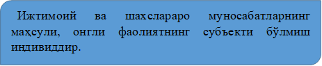 | |||||||
| 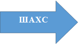 | |||||||
| 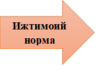 | 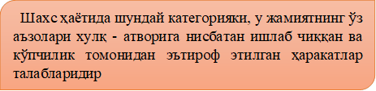 | ||||||
| 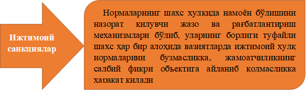 | |||||||
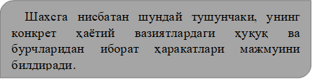
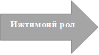
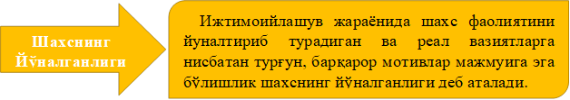
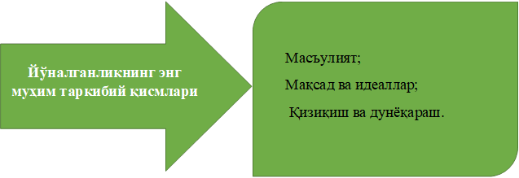
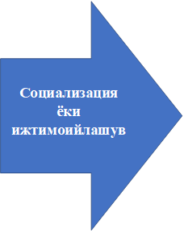
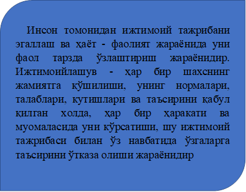
5-Режа. Шахс ва фаолият
Психология фанида ҳайвонларнинг хатти-ҳаракати (уларнинг қайси тараққиёт босқичидан қатъи назар), хулқ-атворининг юзага келиши кўп жиҳатдан уларни қуршаб турган макро, микро ва мизе муҳитга боғлиқ. Уларнинг намоён бўлиши биологик (табиий) шартланган омиллар, воситалар томонидан белгиланади ва бошқарилиб турилади.
Инсонни ҳайвонот оламининг ҳусусиятлари билан қиёслашга ҳара-кат қилсак, у ҳолда мутлақо бошқача воқеликнинг шоҳиди бўлиши-миз мумкин. Чунончи шахс ўзининг фаоллиги билан ҳайвонот ола-мидан фаркди ўлароқ ажралиб туради, мазкур ҳаракатлантирувчи куч илк болалик ёшидан эътиборан ижтимоий-тарихий тарақ-қиёт давомида тўпланган инсониятнинг тажрибасига ва жамиятнинг қонун-қоидаларини эгаллашга йўналтирилган бўлади.
Узоқ даврлар давом этган махсус жараённинг таъсирида содда тарздаги хатти-ҳара-катда фаоллик устуворлик қилганлиги туфайли ўзининг юқори бос-қичига ўсиб ўтиб, янгича мазмун, моҳият, шакл ва сифат кашф этган. Фаоллик негизида пайдо бўлувчи ўзгача сифатни, ўзига хосликни эгаллаган хатти-ҳаракатнинг юксак кўриниши, фақат инсонгагина тааллуқлилиги орқали у психология фанида фаолият деб номлана бошланди. Фаолият фаолликнинг шахсга хос тури сифатида вужудга келиб, у ўзининг психологик аломатлари билан хатти-ҳаракатдан тафовутланади. Унинг фарқли аломатлари тавсифи юзасидан мақсадга мувофиқ мулоҳазалар юритиш айни муддаодир.
Биринчидан, фаолиятнинг мазмуни тўла-тўкис уни юзага келтирган табиий, биологик ва маънавий эҳтиёж билан шартланмаганлиги туфайли унинг психологик механизми ҳам ўзгача негизга қурилиши мумкин. Мабодо эҳтиёж мотив сифатида фаолиятга ички туртки бериб, уни жадаллаштиришга, фаоллаштиришга эришса, у вазиятда фаолиятнинг мазмуни, шакллари ижтимоий: шарт-шароит, талаблар, зарурият, тажриба кабилар билан белгиланади. Шуни алоҳида таъ-кидлаш ўтиш жоизки, инсонни меҳнат қилишга ундаган мотив мод-дий овқатга нисбатан эҳтиёж вужудга келиши туфайли туғилиши ҳоди-саси муайян даражада учраб туради. Аксарият ҳолларда ишчи дастгоҳни очликнинг олдини олиш учун эмас, балки жамият томонидан масъул ижтимоий вазифа сифатида белгиланганлиги сабабли бошқа-ришга қарор қилади. Бундан кўриниб турибдики, ишчининг меҳнат фаолияти мазмуни моддий эҳтиёж билан эмас, балки мақсад билан белгиланади, бу ўз навбатида мақсаднинг ижтимоий негизида ётувчи тайёрлаш масъуллиги билан уйғунлашиб кетади. Модомики шундай экан, одам нима учун бундай йўсинда хатти-ҳаракат амалга оширга-ни, унинг нимани кўзлаб иш қилаётгани мос келмайди, чунки уни фаолликка ундовчи туртки, хоҳиш-истак билан фаолиятни йўналти-рувчи аниқ мақсад ўзаро мутаносиб эмас. Бинобарин, фаолият фаол-лик манбаи ҳисобланмиш эҳтиёж сифатида юзага келган тарзда фа-олликнинг йўналтирувчиси тариқасидаги англанилган мақсад билан идора қилинади.
Иккинчидан, фаолият муваффақиятини таъминлаш учун психика нарса ва ҳодисаларнинг хусусий объектив хоссаларини акс эттириши, қўйилган мақсадга эришиш йўл-йўриқларини аниқлаб бериши жоиз.
Учинчидан, фаолият шахснинг хулқ-атворини мақсадга қаратилган ҳаракатларни рўёбга чиқариш, юзага келган эҳтиёжларни ва ёрдамга муҳтожлиги йўқ фаолликнинг имконини берадиган бошқаришни уд-далаши лозим. Шунинг учун фаолият билиш жараёнларисиз, ирода-вий зўр беришсиз амалга ошиши амри маҳол, чунки у ҳар иккала омил билан узвий алоқага киришганидагина яратувчанлик хусусия-тини касб этади, холос.
Одатда, фаолиятга таъриф берилганда, биринчи галда англашил-ган мақсад билан бошқарилиши, сўнгра психик (ички) ва жисмоний (ташқи) фаолликдан иборат эканлиги таъкидлаб ўтилади. Лекин ушбу белгилар фаолият таърифини мукаммал тарзда очиб беришга қурби етади, деган гап эмас, албатта.
Инсон фаоллигида англанилган мақсад мавжудлиги тўғрисида мулоҳаза юритиш учун ҳар хил хусусиятли бир қанча омилларга мурожаат қилишга тўғри келади. Фаолиятнинг мотивлари, рўёбга чиқа-риш воситалари, ахборот танлаш ва уни қайта ишлаш англанилган ёки англанилмаган, баъзан англанилганлик нотўкис, ҳатто у нотўғри бўлиши мумкин.
Жумладан:
а) мактабгача ёшдаги бола ўйин фаоли-ятига нисбатан эҳтиёжини гоҳо англайди, холос;
б) бошланғич синф ўқувчиси ўқув мотивларини ҳамиша ҳам англаш қурбига эга бўлмай-ди;
в) ўсмир ҳам хулқ мотивларини нотўкис ва нотўғри англаши мум-кин;
г) ҳатто вояга етган одам баъзан хулқ мотивини ноўрин хаспўш-лашга интилади. Бундан ташқари, ҳатто фаолиятни амалга ошириш-ни режалаштириш, уни рўёбга чиқариш учун қарор қабул қилиш, маҳсулани тахминлаш, хулоса чиқариш ҳам англанилганлик кафола-тига эга эмасдир. Чунки фаолиятни рўёбга чиқарувчи ҳаракатнинг аксарияти онгтомонидан бошқарилмайди, жумладан, велосипед учиш, куй чалиш, китоб ўқиш, телефон қилиш одатий ҳодисадир.
Шуни уқтириб ўтиш лозимки, фаолиятнинг жабҳаларини онгда акс даражаси ва мукаммаллиги унинг англанилганлиги кўрсаткичи мезони ҳисобланади. Лекин фаолиятнинг англанганлиги даражаси кенг кўламли бўлишига қарамасдан, мақсадни кўзлаш (англаш) унинг ус-тувор белгиси вазифасини ўйнайверади. Фаолиятда мақсадни англаш иштирок этмаса, унда у ихтиёрсиз (импульсив) хатти-ҳаракатга айла-ниб қолади ва бундай ҳолат кўпинча ҳиссиёт билан бошқарилади. Жаҳл, ғазаб (аффект), кучли эҳтирос ҳолатлари юз берган одам ихти-ёрсиз ҳаракат қилади. Бироқхатти-ҳаракат ихтиёрсизлиги унинг анг-ланилмаганлигини билдирмайди, аксинча бунда инсон мотивининг шахсий жабҳаси англанилган бўлади, унинг ижтимоий мазмуни эса қамраб олинмайди.
Фаолиятнинг тузилиши
Воқеликка нисбатан муносабатнинг муҳим шакли сифатидаги фаолият инсон билан уни қуршаб турган олам (борлиқ) орасида бевоси-та алоқа ўрнатади. Табиатга, нарсаларга ўзга одамлар таъсир кўрсати-ши ҳам фаолиятнинг қудрати билан рўёбга чиқади. Инсон фаолиятда нарсаларга нисбатан субъект сифатида, шахслараро муносабатда эса шахс тариқасида гавдаланади ҳамда имкониятларини юзага чиқаришга мушарраф бўлади. Унинг натижасида иккиёклама боғланиш узлук-сиз ҳаракатга кирии иши, тўғри ва тескари алоқа ўрнатиши туфайли инсон нарсаларнинг, одамларнинг, табиат ва жамиятнинг ўзига хос хусусиятлари тўғрисида маълумот тўплайди. Ҳар хил хусусиятли ўзаро муносабатлар негизида фаолият субъекти учун нарсалар субъектлар сифатида, одамлар эса шахс тимсолида акс эта бошлайди.
Инсон фаолиятга йўналтирилган мақсадга эришиш учун шу йўлда ҳаракат қилиши туфайли хусусий вазифаларни бажаришга киришади. У ўз олдида турган мақсадни амалга ошириш учун маълум вақт оралиғида у ёки бу амални бажаради. Бирор матнни компьютерда тайёрлаш учун инсон олдин уни электртокига улайди, экранни ишга созлайди, унингтугмачаларини босиш орқали ҳарф ва сўзларни тера-ди, сўнгра маълум маъно англатувчи матн пайдо бўлади.
Психологияда фаолиятнинг алоҳида бир хусусий вазифасини ба-жаришга мўлжалланган, нисбатан тугалланган қисми (унсури), таркиби ҳаракатдеб номланади. Масалан, компьютертехникасидан фой-даланиш ҳаракатлари амалга ошириладиган ишлардан таркиб топади. Ҳаракатлар натижасида одам борликдаги нарсалар хусусияти, ҳола-ти, фазовий жойлашувини ўзгартиради. Мазкур жараён нафақат ҳаракат ёрдами билан, балки муайян саъй-ҳаракатлар туфайли юзага ке-лади. Дурадгор эшик ясамоқчи бўлса, аввал муносиб материал тан-лайди, уларни ўлчайди, унсурларини санайди, рандалайди, қисмлар-ни бир-бирига жойлаштиради, ёпиштиради, унга пардоз беради, ошиқ-мошиқ қоқади, кесаки ўрнатади, очиб ёпилишини текширади ва ҳоказо. Келтирилган мисолдан кўриниб турибдики, дурадгорнинг гавда-си, оёқ-қўллари, бошининг тутиши саъй-ҳаракатлари билан бирга «танлаш», «ишлов бериш», «ўрнатиш» амал қисмлари мажмуаси фаолиятни таркиб топтиради. Саъй-ҳаракатнинг ҳаракатдан фарқли томонлари унинг аниқлиги, мақсадга йўналганлиги, эпчиллиги, уйғунлиги сингари белгиларида ўз ифодасини топади.
Инсон фаолиятида нарсаларни ўзлаштиришга йўналтирлган саъй-ҳаракатлардан ташқари:
а) тананинг фазовий ҳолати;
б) қиёфанинг сақланиши (тик туриш, ўтириш);
в) жой алмашиш (юриш, югуриш);
г) алоқа воситалари саъй-ҳаракатлари қатнашади.
Одатда, алоқа воситалари таркибига:
а) ифодали саъй-ҳаракатлар (имо-ишора, панто-мимика);
б) маъноли ишоралар;
в) нутқий саъй-ҳаракатлар киритади.
Саъй-ҳаракатларнинг ушбу турларида таъкидлаб ўтилганлардан ташқари мушаклар, хиқилдоқ, товуш пайчалари, нафас олиш аъзолари иштирок этади. Демак, нарсаларни ўзлаштиришга қаратилган ҳара-катнинг ишга тушиши муайян саъй-ҳаракатлар тизимининг амалга оширилишини англатади. Бу ҳодиса кўп жиҳатдан ҳаракатнинг мақ-садига, таъсир ўтказиладиган нарсаларнинг хусусиятларига ва ҳара-катнинг амалга ошиши шарт-шароитларига боғлиқ.
Жумладан,
а) китобни олиш қаламни олишдан бошқачароқтарздаги саъй-ҳаракат-ни тақозо этади;
б) автомобилни ҳайдаш велосипедда учишга қара-ганда айрича саъй-ҳаракат талаб қилади;
в) эллик кг штангани кўта-ришда бир тоннага қараганда кўпроқ қувват сарфланади;
г) картонга катта шаклни ёпиштиришга қараганда кичик шаклни жойлаштириш қийин кечади.
Фаолиятнинг ўзига хослиги
Фаолият жаҳон психологияси фанининг асосий (фундаментал) тушунчаларидан бири ҳисобланиб, кўпинча психологик категория сифатида олиб қаралади. Шунинг билан бирга ушбу тушунча ҳаддан зиёд кенг маъноли ва кўп аҳамиятли тарзда фойдаланилганлиги туфайли унинг моҳияти ёйиқ бўлиб боради, натижада қиймати асл мазмунини йўқотади. Худди шу боисдан психологияда фаолият учун умумий қабул қилинган дефиниция мавжуд эмас, фойдаланиб келинаётган тузилма, таъриф эса кўп ҳолларда танқидга учрайди. Ҳолбуки шундай экан, семантик таҳлил ўтказиш орқали фаолиятга нисбатан турлича қарашларни умумлаштириш, ўзаро таққослаш зарурияти аниқланган бўлар эди, бу эса ўз навбатида унинг (фаолиятнинг) илмий психологик объектига айлантириши унга алоқадор тушунчалар таркибини мукаммаллаштириш имкониятини вужудга келтиради. Энциклопедия, изоҳли луғат ва лингвистик сўзликлардаги маълумотлар, илмий матнлар таҳпилининг кўрсатишича, фаолият тушунчаси фалсафа, физиология, социология, психология фанлари предметидан келиб чиқиб, ўзаро қоришиш оқибатида меҳнат, иш, активлик, хулқ сингари тўрт хил тавсифга эга бўлган.
Фаолиятни интериоризациялаш ва экстериоризациялаш
Юқоридаги мулоҳазалардан кўриниб турибдики, мияни илгарилаб акс эттириш имконияти ва ҳали амалга оширилмаган ҳаракатнинг натижаси инсон психикасида қай тарзда инъикос этилиши кучли қизиқиш уйғотади. Бу ҳодисани изоҳлашнинг ягона йўли - у ҳам бўлса борлиқнинг муҳим ҳусусияти ҳисобланмиш қонуниятнинг мав-жудлигидир. Борлиқдаги қарийб (неосфера ҳисобга олинмаганда) барча нарсалар, муносабатлар, хусусиятлар, шарт-шароитлар, тузилмалар бир-бири билан доимий боғлиқликка эга бўлиб, муайян қонуният асосида ҳаракатланади, бир ҳолатдан иккинчисига ўтади. Шунинг учун идишдаги сув қайнатилса буғга айланади, ҳарорат пасайса, у музлай-ди, ҳаво исиганида эса муз эрий бошлайди, баҳор кетидан ёз келади, нарсалар ишқаланса қизийди ва ҳоказо.
Худди шу боис объект билан ҳодиса ўртасидаги ўзгармас, барқарор муносабатлар, объектнинг му-ҳим хусусиятлари ҳодисанинг қонунияти дейилади. Уларда ўзгармас хусусиятлар ва қонуниятларнинг мавжудлиги ўзгаришларни олдин-дан пайқаш, ҳаракатларни мувофиқ йўналтириш имконини вужудга келтиради. Ташқи, яққол фаолият фавқулоддаги даврда ички тимсолий (психик) фаолият тарзида ҳис этилади. Объектларга йўналтирилган яққол ҳаракатлар уларнинг муҳим хусусиятларига мўлжалланган тимсолий жараён билан алмаштирилади. Худди шу сабабдан ташқи, яққол ҳаракатдан, ички, тимсолий ҳаракатга мана шу тарзда ўтиш жараёни интериоризация (ички тарзга айланиш) деб аталади. Интериоризация муаммоси рус олимлари Л.С.Виготский, А.Н.Леонтьев, П.Я.Гальперин ва уларнинг шогирдлари томонидан турли жабҳалар-да тадқиқот қилинган. Интериоризация шарофати билан инсон пси-хикаси муайян вақт оралиғида унинг идрок майдонида йўқ нарсалар-нинг тимсоли (образи)дан фойдаланиш қурбига эга бўлди. Шу нарса маълумки, бундай ўзгаришларнинг муҳим қуроли бўлиб сўз, ўзгариш воситаси сифатида нутқий фаолият хизмат қилади. Шунинг учун сўзларни тўғри ишлатишга одатланиш фавқулодда буюмларнинг муҳим хусусиятларини ахборотидан фойдаланишнинг усулларини ўзлаш-тириш демакдир.
Инсон фаолияти мураккаб ва ўзига хос жараён бўлиб, шунчаки эҳтиёжларни қондиришдан иборат эмас, балки кўпинча жамиятнинг мақсади ва талаблари билан белгиланади. Худди шу боисдан қўйил-ган мақсаднинг англанилганлиги ва унга эришиш бўйича иш ҳара-катлари тажрибаси билан боғлиқэканлиги инсон фаолиятининг ўзига хос белгиси бўлишини тасдиқлайди.
Шунинг учун шахс фаолиятининг жисмоний (ташқи) ва психик (ички) тузилмалари бир-бири билан уйғунлашганлиги кўзга ташланади. Инсон фаолиятининг ташқи жабҳаси унинг атроф-муҳитга таъсир кўрсатишга мўлжалланган саъй-ҳаракатлар ички (психик) жиҳатига боғлиқ бўлиб, уларни мотивлаштиради, билишга ундайди ва бошқаради.
Шунингдек, ташқи жабҳа ўз навбатида:
а) психик фаолият буюмлар ва жараёнлар хусусиятларини ўзида намоён қилади;
б) уларнинг мақсадга мувофиқ тарзда қайта ўзгартирилишини амалга оши-ради;
в) психик андозалар ўхшашлигини, натижалар ва ҳаракатлар-нинг кутилмаларига мувофиқпигини кўрсатади;
г) уларни узлуксиз равишда йўналтириб ва назорат қилиб туради. Шунга мувофиқ ра-вишда ташқи, яққол фаолиятни ҳам ички (психик) фаолиятнинг экс-териоризациялашуви (ташқи тарзга айланиши) деб баҳолаш мақсадга мувофиқ.
Инсон шахсининг шаклланиши ўйин, таълим, меҳнат, спорт ва бошқа фаолиятнинг турларида амалга ошади. Фаоллик туфайли фаолиятни амалга ошириш жараёни юзага келади, хулқ-атвор, муомала (коммуникация) воситасида эҳтиёж, истак, ижтимоий талаблар қонди-рилади, турли хусусиятли ахборотлар ўзлаштирилиши натижасида шахс таркиб топа бошлайди.
1. Ўйин фаолияти. Фаолиятнинг оддий шаклларидан бири ўйин ҳисобланади, лекин у тобора такомиллашиб, содда ҳаракатлардан кейинчалик сюжетли, ролли ўйинларга, ҳатто спортгача мураккабла-шиб боради, атроф-муҳитни акс эттиришида иштирок эта бошлайди. Инсоннинг борлиқни инъикос этишидаги дастлабки уриниш ҳаракат орқали намоён бўлади. Ҳаракатлар боланинг табиатга, уни қуршаб турган кишилик дунёсига нисбатан муносабатини, улар тўғрисидаги илк таассуротлар, содда тасаввурлар, билимларни ўзлаштиришни ан-глатиб келади. Кейинчалик оддий ҳаракатлар муайян маъно касб этиб, сюжетли ва ролли ўйинларга айланади. Ўйинлар миллий (этник) ва умумбашарий туркумлардан таркиб топган бўлиб, ижтимоий ҳаёт-нинг барча жабҳаларини ўзида акс эттиради. Ўйинлар такомиллашиб бориб спорт турларига, спорт фаолиятига ўсиб ўтади, жумладан, шах-мат, дамино, футбол, шашка ва хоказо.
Ўйин фаолиятида бола ижтимоий воқеликни таклид, роль орқали ижро этишга ҳаракат қилади ва шу йўсинда атроф-муҳит тўғрисидаги, ижтимоий турмушдаги шахслараро муносабатларни ўзлаштира боради. Ижтимоий турмушдаги у ёки бу ҳодисани роль орқали ижро қилади. Сўз билан ҳаракатнинг бирикуви натижасида ўйин фаолият тусини олади ва муайян маъно, ахборот бериш, узатиш имкониятига эга бўлади. Дастлабки ўйин айнан катталар хатти-ҳаракатини такрорлаш, уларга тақлид қилиш билан тавсифланади. Сюжетли ўйинлар борлиқнинг гоҳ англанган, гоҳо англанмаган тарзда у ёки бу томон-ларини эгаллашга хизмат қилади.
2. Ўқув фаолияти (Таълим). Таълим ҳам жараён, ҳам фаолият сифатида инсоннинг ҳаетида муҳим роль ўйнайди ва муайян давр учун етакчи фаолият сифатида гавдаланиши мумкин. Таълим бошқача сўз билан айтганда, ўқитувчи билан ўқувчининг субъект-субъект муносабатидаги ҳамкорлик фаолияти ҳисобланади. Аксарият ҳолларда ўқитувчи ахборот узатувчи (коммуникатор), ўқувчи эса уни қабул қилувчи объект сифатида талқин этилади, лекин иккиёқлама ҳаракат туфайли маълумот инсонга англашинилади, ўзаро таъсир, ўзаро англашув, тушунув, ўзаро субъектларнинг бир-бирига зарурийлиги, тақозочанлиги ҳамкорлик-нинг муваффақияти кафолати саналади. Таълим ўқув фаолияти, ақлий фаолият, билиш фаолияти турткиси вазифасини ўтайди, чунки ҳар қайси фаолиятнинг шакли ақлий меҳнат туфайли амалга ошади. Таълимнинг бошқа фаолият турларидан фарқи унинг маҳсулининг ўзига хослиги, барча босқичларига онгли ёндашувда ва муносабатда бўлишдир. Таълим ўқув фаолияти ёки жараён сифатида мустақил изланиш-ни, ижодий муносабатни, турли вазият (аудитория ва ундан ташқари-да)ни, ҳар хил босқични (бошланғич, ўрта, махсус, олий таълим) ўзида мужассамлаштиради. Мустақил билим олиш ва мутолаа қилиш ҳам ўқувфаолиятинингмуайян кўринишлари бўлиб, шахсий, илмий, ижо-дий изланишнинг маҳсули ҳисобланади.
3. Меҳнат фаолияти. Инсоният ўзининг меҳнати туфайли онгли мавжудодга айланган, жамиятда мўл-кўлчиликни яратган, табиатда эса айрим ўзгартиришларни амалга оширган, борлиқ тўгрисидаги маълумотларни эгаллашга мушарраф бўлган. Меҳнат фаолиятининг таркибида меҳнат, иш-ҳаракат ётади. Уларнинг ҳар қайсиси муайян улушни амалга ошириш туфайли фаолият маҳсули вужудга келади, у моддий ёки маънавий кўринишда бўлиши мумкин.
Аждодларимиз томонидан яратилган касб-кор кўникмаларини ав-лодларга ўргатиш меҳнат фаолияти ёрдамида амалга оширилади. Касбий малакаларни шакллантириш, такомилаштириш, маҳсулот яратиш ва ундан мақсадга мувофиқ равишда фойдаланиш меҳнат фаолияти орқали рўёбга чиқарилади. Меҳнат фаолиятида амалий кўник-малар барқарорлашади, назарий фикр, ғоя, мулоҳаза вужудга келади. Фаолият билан онг бирлиги мавжуд бўлганлиги сабабли шахс таркиб топади, ҳам ахлоқан, ҳам ақлан ривожланади. Меҳнат фаолияти ин-дивидуал хусусият касб этса-да, лекин унинг моҳияти ижтимоийдир. Инсон шахсий эҳтиёжини қондириш учун меҳнат қилади, у ёки бу маҳсулот ишлаб чиқарилади, оқибат натижада одам ижтимоий жами-ят фаровонлиги учун ўз шахсий улушини қўшади.
Меҳнат фаолияти яшаш, эҳтиёжни қондириш, келажак учун мўл-кўлчилик вужудга келтириш, яратилган маҳсулларни (меъморчилик, санъат, маданият асарларини) сақлаш, асраш, мерос сифатида қол-дириш функцияларини бажаради. Шунингучун меҳнат фаолияти ўн минглаб касб-кор профессиограммасига асосланган ҳолдатурли шакл-да ташкил қилинади ва муайян режа, мақсадни рўёбга чиқариш учун ҳар хил вазиятларда амалга оширилади.
Мавзу юзасидан қисқача хулоса:
Шахсни ўрганишнинг ижтимоий психология учун ўзига хослиги. Шахс муаммосига ижтимоий-психологик ёндашишнинг моҳияти. Шахс ижтимоийлашуви жараёни. Ижтимоий норма ва унинг турлари. Ижтимоий санкциялар ва уларни амалга ошиши шартлари. Ижтимоий рол тушунчаси ва унинг бажарилишига кўра тартибли ёки тартибсиз сингари фикрларнинг шаклланиши.
Ижтимоий таъсирларнинг шахс томонидан англаниши. Ундаги «Мен» образи ва унинг адекватлиги масаласи. Ўз-ўзини англаш ва шахсдаги химоя қилиш механизми моҳияти. Шахснинг ўзи ҳақидаги образида ёш ва жинсий ўзига хосликлар.
Шахс ижтимоийлашуви масканлари (оила, боғча, мактаб, махсус таълим муассасалари, олийгоҳлар, меҳнат жамоалари, маҳалла) хамда норасмий уюшмалар ва нодавлат ташкилотлар ва бу масканларнинг шахс ижтимоийлашувидаги ўзига хослиги.
Шахс социализацияси сохалари (фаолият, мулоқот, ўз-ўзини англаш), босқичлари (меҳнат фаолиятигача бўлган, меҳнат фаолияти, меҳнат фаолиятидан кейинги даврлар) ва уларда шахс тажрибаси жиҳатлари. Ижтимоий установкалар ва уларнинг хусусияти. В.Ядов бўйича ижтимоий установкаларнинг тўрт босқич ва тўрт тизимли эканлиги.
Ижтимоий установкаларни ўзгартириш йуллари. Ижтимоий установканинг объект ва вазиятга боғлиқлиги.
Шахс типлари ва уларнинг ижтимоий-психологик характеристикаси. Бу борадаги экстроверт ва интроверт, мобил ва ригид, доминант ва тобе типдаги шахслар, уларнинг хусусиятлари.
Ушбу мавзуда шахснинг ижтимоий муносабатларда мавқеи, роли, установкалари, талаблар тизими, ижтимоийлашуви хусусиятлари, мулоқот давомида намоён бўладиган турли тоифалари тўғрисида маълумот ва тушунчалар берилган.
Назорат саволлари ва мустақил ишлар мавзулари:
1. Шахсни ўрганишнинг ижтимоий психология учун ўзига хослиги.
2. Шахснинг ижтимоий установкалари.
3.Шахсга қўйиладиган талаблар.
4. Шахс ва фаолият
5.Фаолия турлари
6.Ижтимоий нормалар
7. Ижтимоий санкциялар
8. Шахс типлари ва уларнинг ижтимоий психологик характеристикаси
Мавзу юзасидан ижтимоий тренинглар
Тренинг дастури вазифалари:
1.Шахслараро жипсликни таъминлаш.
2. Низоли вазиятларда ўзини тутишни ўрганиш.
3. Ўз ўзига бўлган ишончни орттириш.
4.Атрофдагиларни ва ўзини ҳурмат қилишга ўргатиш.
5.Хулқ атвордаги ижобий ва салбий томонлар ҳақида фикр алмашиш.
Кутилаётган натижалар:
1. Иштирокчиларнинг кайфиятини кўтарилиши.
2. Иштирокчилар орасида ўзаро ҳурмат туйғусининг вужудга келиши.
3. Иштирокчиларнинг бир бирлари ҳақида кенгроқ тасаввурга эга бўлишлари.
4. Тренинг иштирокчиларини ўзаро аҳиллашуви.
5. Иштирокчиларда ўзаро психологик тўсиқларни бартараф этиш.
Тренинг машғулоти 80 дақиқа давом этиб, 7 та машғулотдан иборат.
|
1 машғулот |
“Олма” |
5 дақиқа |
|
2 машғулот |
“Ботқоқлик ўйини” |
10дақиқа |
|
3 машғулот |
“Авлодлар ўртасидаги низо” |
15 дақиқа |
|
4 машғулот |
“Ғарам, тепалик, сўқмоқ” |
10 дақиқа |
|
5 машғулот |
Оила муаммолари |
15 дақиқа |
|
6 машғулот |
“Оила тасвири” |
20 дақиқа |
|
7 машғулот |
“Автобус” |
5 дақиқа |
Тренингимиз самарали ўтиши учун машғулотлар жараёнида қуйидаги қоидаларга амал қилишимиз лозим.
1. Интизомга риоя қилиш.
2. Махфийлик.
3. Фаоллик.
4. Самимийлик.
5. “Ягона микрафон”
Тавсия этиладиган адабиётлар:
1. ҒозиевЭ.Г. Умумий психология. Тошкент. 2002.1-2 китоб.
2. ҒозиевЭ.Г. Тошимов Р. Менежмент психологияси. Т-2001
3. ҒозиевЭ.Г. Муомала психологияси. Т-2001.
4. “Психология” Уч.Т-2. “Проспект”. Москва - 2004.
5. Психология и педагогика. Под редакцией А.А.Радугина. Изд. “Центр” 2003